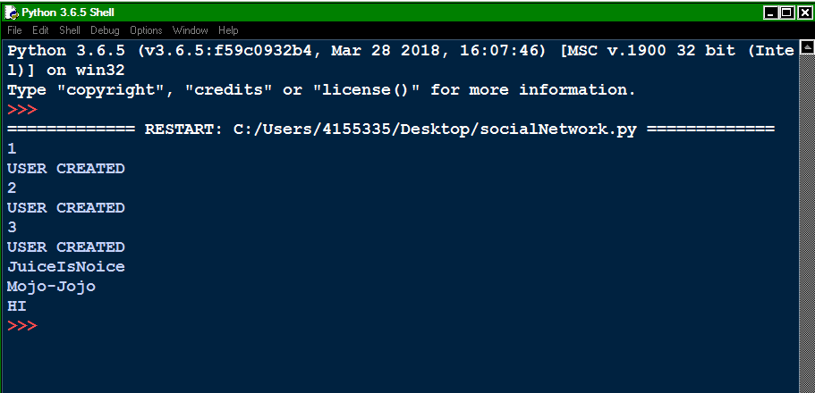
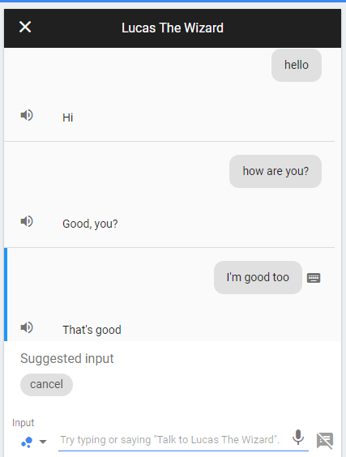

Today I learned how to make different pages on my website. I also learned a lot about how the internet works. We spent a lot of time improving our websites and everything is starting to come together.The main issue that I faced with was learning how to code the JavaScript and the CSS. Both of those are way different than HTML and the JavaScript especially had me scratching my head at some points. JavaScript is the only language that I really struggled majorly with. Not even Python was as hard as it. In the end I managed to make a cool website and I am very proud of the way that it came out...
Python Social Network

Today we began the day by learning about a new language known as Python. Python is significantly easier than JavaScript so I am glad that we moved on from that. We started using python to create a Caesar Cipher like we did with JavaScript, only this one was way faster and easier. After we finished doing the Cipher, we began on our main Python project which was our Social Network. This was really fun because we used a lot of functions to add friends, delete friends, add posts and so much more.The challenging part wasn't the ability to add or delete friends, it actually turned out to be the way that we viewed the posts that our friends made. The code took a couple hours just to figure out what we did wrong and how we could fix it. In the end everything worked out and we could see Mojo-Jojo doing his thing...
Electrical Circuits
Today we started to learn more about electricity and how it works. Electricity has parts such as amperes, voltage, and currents. The circuits run by having positive energy run to the negative side. The LEDs were very specific about the way that you had the oriented and it was very annoying. Most of the time I struggled with figuring out how to close the circuit. Whether it was a misplaced wire, LED, or even resistor, there was almost always something wrong with my ciruit. After we got the gist of how circuits work, we began using the Arduino to program the LEDs to perform certain actions. To end off the project we began to start building our robot which is a topic for another day...
Robotics
Today we programmed our robots to move and do other stuff such as turning once it gets close to another object. The robot was built yesterday and was made using screws that were way too small and nuts. The whole robot is controlled by an Arduino which is programmed by files that Diana gave to us. Our goal was to be able to add certain functions onto our robot which was not as bad as I thought it would be. The main and most annoying issue is that one of the motors refuses to work properly. It keeps turning and using less/more power every time the program resets. It went backwards perfectly, but when it came to moving forward, it became such a disaster. Something has to be wrong with one of the motors which sucks because we can't really do anything about that...
Google Assistant

We started on the google assistant on a website called dialogflow.com. On this website we created an agent and within that agent we made a bunch of intents which had all of our dialogue. We created these intents so that we could speak to our assistant and so that it could speak back. The google assistant only worked on Androids so that kind of sucked but for those that could get it on their phones, it sounded pretty cool...
Neural Network
To start off, we began the project by coming together as a class and coming up with a bunch of different codes. These codes we got by writing them on the board. The goal of the network was to open up a path for us to get to the Chicken Dinner. In order to get to the Chicken Dinner we had to make a working button that was 100% guaranteed to work every time. We used multiple loops to be able to multiply the input with the weight until we finally got a total of 1. The total of 1 led straight to the Chicken Dinner. After we managed to get the chicken dinner, the numbers on the computers were not rounded to what they should have been so we had to round them. We just simply changed it so that the value of 2 for the weight got rounded to one decimal point. We were finally done with this neural network...